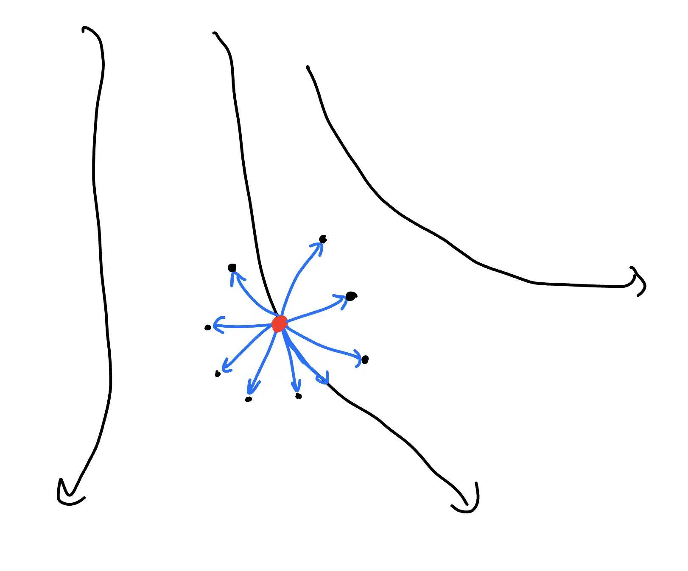

Model Based Learning with Policy#
之前，我们介绍的Model-based方法完全基于planning的方法，而没有再使用policy。但实际上，iLQR这样的方法计算量很大并且需要重复迭代才能收敛，而基于采样的随机方法又不精确。我们因此不妨考虑一种新的方法：在Model-based的基础上，加入Policy。
直观的想法很简单，我们现在反正也已经有了模型，为什么不直接对
进行优化？（其中 \(\phi\) 代表我们的模型的预测结果）。注意这里一切都是已知的了，没有什么需要和环境进行交互。因此，我们直接对 \(\theta\) 求导数即可。
但我们马上又会注意到这里的问题：和之前planning的时候为什么不能直接使用一阶方法一样，现在如果对 \(\theta\) 梯度下降必然会造成梯度爆炸或者消失的问题。也就像RNN一样，这样普通的迭代式网络是无法训练的。但这里又和LSTM不同，我们不能随意修改这个表达式的形式。因此，这一方法失败了。
但我们立刻反应过来，我们可以使用一些前面Model-free的时候介绍的方法。比如，可以使用policy gradient。之前我们提到，policy gradient最大的缺陷是它是on-policy的，所以不sample-efficient。但现在我们根本不care！因为演化是model给出的，而非环境。这样，我们就给出了一个非常强大的方法。用一个有趣的语言来说，这就是 "Model-Free Methods with a Model" 。
Utilizing Model in Model-Free Methods#
我们现在的关键问题是，如何在model free methods中使用现在的动力学模型。如果不是很仔细，给出的算法很可能有漏洞。比如，如果我们大大咧咧地直接给出这样的方法：
"Model Free Method with Model"(wrong)
- 运行一个base policy \(\pi\) ，收集数据到buffer \(B\) ；
- 重复：
- 从buffer选择若干数据，学习一个动力学模型 \(p_\phi(s_{t+1}|s_t,a_t)\) ；
- 重复：
- 用模型生成若干trajectory的数据；
- 用某种model free的算法更新policy \(\pi^\star\) 。
- 用最新的policy \(\pi^\star\) 收集数据，加入buffer \(B\) 。
乍一看，这个方法完全无懈可击。但实际上其存在一个巨大的漏洞：我们使用模型生成一个full trajectory，这会严重地放大模型的误差。还记得之前用model进行planning的时候，我们使用finite horizon并且使用MPC（只保留plan出来的第一步）来避免这个问题。现在，我们同样要避免这种情况。
那我们应该怎么办呢？这时候，就可以采用一种“杂交”技术：我们先从环境搞一条完全正确的trajectory
然后，我们选定一个 \(k\) ：比如我们认为模型在 \(k\) 步之内累积的误差还可以接受。我们就可以“树上开花”：
其中加“ \(^\prime\) ”的代表使用model的预测。这样，给定一条环境的路径，我们的模型就可以生成 \(k\) 个不同的路径。从而我们就可以用这 \(k\) 个路径来进行model free方法的更新，如下面的算法所示：
Model Free Method with Model
- 运行一个base policy \(\pi\) ，收集数据到buffer \(B\) ；
- 重复：
- 从buffer选择若干数据，学习一个动力学模型 \(p_\phi(s_{t+1}|s_t,a_t)\) ；
- 重复：
- 从buffer选择一条完全正确的trajectory \(\tau\) ；
- 用模型生成 \(k\) 个新的trajectory数据；
- 用某种model free的算法更新policy \(\pi^\star\) 。
- 用最新的policy \(\pi^\star\) 收集数据，加入buffer \(B\) 。
但这一方法也有其缺点。注意到这样的路径前面的 \(1\to T-k\) 都是来自于buffer的，因此其分布肯定不对。这样，我们再次失去了使用on-policy算法的机会。因此，这一算法中model free不能是policy gradient，只能是off-policy的方法。
Q learning with Models#
我们来讨论一下上面算法的具体情况：off policy算法选为Q learning。还记得我们之前提出过，Q learning的一般表示形式：
while True:
# sample data
if q_net is None: # first epoch, random sample
env_data = SampleFromEnv(policy=random)
else:
env_data = SampleFromEnv(policy=ExplorePolicy(q_net))
q_buffer.AddData(env_data)
for _ in range(K):
# get Q-learning data
train_q_data = q_buffer.sample()
for _ in range(S):
q_net.GradStep(train_q_data)
q_net.Update()
（这里和当初提出的格式略有不同。同时，Update()放入了内循环。这是因为我们当时说的是隔一段时间设置 \(\phi_0=\phi\) ，但后面又给出了实践中一般使用的形式，也就是每一次都进行 \(\phi_0\leftarrow \alpha\phi+(1-\alpha)\phi_0\) 。）
现在，我们可以发现，model的引入就是相当于给这个过程加入另外两个process：
- 训练dynamic模型；
- 从dynamic模型中采样数据，加入Q learning的训练buffer。具体地，我们还是采用前面的方法，根据真实环境中的一个state采样，然后用model来预测一个很短的trajectory（长度记为 \(T\) ）。
这两个过程应该放在什么位置呢？可以想象，model的训练应该放在外层，因为其相对简单，运行的次数不需要太多；而model的使用应该放在内层，至少要比从环境的采样次数多。
另外一个细节是，就像上一次我们说的那样，我们对于dynamic model的训练也需要一个buffer。这个buffer应该是一个独立的buffer；但另外一个方面，这个buffer里面的数据都是从环境获得的，因此对于Q learning来说都是宝贵的。因此，可以想到这个dynamic buffer应该包含于Q learning的buffer中。
这样，我们就可以给出一个一般的算法描述：
while True:
# sample data
if q_net is None: # first epoch, random sample
env_data = SampleFromEnv(policy=random)
else:
env_data = SampleFromEnv(policy=ExplorePolicy(q_net))
dynamic_buffer.AddData(env_data)
q_buffer.AddData(env_data)
# train dynamic model
dynamic_model.Train(dynamic_buffer.Sample())
for _ in range(K):
# add additional data to Q learning data buffer
start_point = dynamic_buffer.Sample(n)['states'] # n: a hyperparameter, usually = 1
path = dynamic_model.GetTrajectories(
start=start_point,
length=T,
policy=q_net
)
q_buffer.AddData(path)
# get Q-learning data
train_q_data = q_buffer.Sample()
for _ in range(S):
q_net.GradStep(train_q_data)
q_net.Update()
这个算法也有另外一个名字：MBPO（Model-Based Policy Optimization）。它也可以被扩展到不使用Q learning的其他方法中，只不过该方法必须是off-policy的。
Dyna#
Dyna是上面方法的一个特殊情况：我们选取 \(T=1\) ，也就是说我们只用model预测一个step。但是，相应地，我们并不是做一个采样，而是选取多个 \(s'\) 。这和前面的方法各有优劣。
Dyna的算法可以如下写出（当然，其细节和之前可能略有出入，因为毕竟是两个独立提出的算法）：
Dyna
重复：
- 运行某种policy（需要exploration）获得一些 \((s,a,s',r)\) ，加入replay buffer \(B\) ；
- 用这一组数据更新一步dynamic model；
- 用这一组数据更新一次Q function；
- 重复 \(K\) 次：
- 从buffer中取出一组数据 \((s,a)\) 。
- 从model给出的概率 \(p(s'|s,a)\) 中采样 几个 \(s'\) ，并用期待值再次更新Q function。
如果你已经忘记了Q learning的update方式，我们这里重新写一次：
从这个表达式，我们就可以看到Dyna相比于普通Q learning的优势：原来我们对 \(s_{t+1}\) 的期望只能通过单采样进行。但现在相当于分布本身已经被我们掌握，因此我们可以采很多样来求期待值！这样，右边的期望估计的就会更加准确。
Summary#
我们可以在这里暂停一步，思考一下我们的初心。
在很久之前，我们提出要学会环境的动力学。但当时我们的目标是直接严格地（或者近似地）根据这个动力学的数学表达式求解最优策略。我们跨越重重困难，从环境动力学已知的问题出发，进一步扩展到动力学未知，需要手动学习的问题。
但本讲又做了一步大的转弯，我们不再直接使用这个动力学，而是再次将其作为一个工具，只是用来生成数据，训练原来的model-free方法。这真的有意义吗，我们真的这么缺少数据吗？比如说，Q-learning本身就是off-policy的，我们通过replay buffer反复“榨干”环境的数据，不是做的也很好吗？
于是审视整个过程后，我们终于发现：创造数据本身并不是我们的目的。关键在于我们数据的覆盖能力。在高维空间中，随便几条trajectory基本上是sparse的，我们难以从中学到什么。但model-based的关键是，我们可以从任何一个state，生成任何一个action之后的结果。尽管这个结果可能不准确，但这个数据的价值是不可估量的——原先从环境中就算采很多很多的数据，也很少有概率能到达同一个点处两次。

这也就是model-based learning能够work的原因：从环境中获得的数据东一榔头西一棒子，模型很难快速学会一些特性；而model可以给出模型想要的数据，从而让我们的model-free方法更加有效。
Multi-Step Models & Successor Representations#
我们来讨论一个稍微advance一些的话题。
还记得之前我们提出，走一步的model-based方法会面临error accumulation的问题。那自然想到：为什么我们不学习一个模型直接走多步呢？更甚，我们为什么不直接学习某种东西，使得输入一个policy，它直接输出policy的reward，而跳过中间大部分的计算呢？
如果这个方法成功了，那么前面的那一切问题立刻烟消云散！带着这种思想，我们不妨从定义出发：
为了简单起见，我们记
这样，上面的表达式就变成了
其中 \(p(h_{t'}|h_t)\) 代表着 \(t\) 时刻处于 \(h_t\) 的情况下， \(t'\) 时刻处于 \(h_{t'}\) 的概率。然后，我们稍微交换一下求和顺序：
这里我们定义了一个分布 \(p_{\text{fut}}\) （代表future）：
这一分布也被称为successor distribution。如何得到这样的一个分布呢？可以发现，我们可以这样来做：
- 取 \(t'-t\sim \text{Geom}(\gamma)\) ，也就是从几何分布中采样；
- 取 \(h=h_{t'}\sim p(h_{t'}|h_t)\) 。
我们发现了问题的关键：只要输入policy后，我们能学会这个successor分布，就立刻可以输出reward。
那么，如何学习呢？我们试着建立起这个分布的递归关系。从定义出发，展开一步
我们可以把 \(p_{\text{fut}}(\cdot|h_t)\) 看成一个关于 \(h_t\) 的向量值函数。这时，这个向量值函数满足一个类似“Bellman方程”的，不同state-action pair之间数值的关系。注意其中 \(p_\pi\) 代表一步的分布，因此是和policy有关的。这样，我们的任务就是，给定一个policy，求解这个方程。
Introducing Representations#
但是首当其冲的问题在于，这个向量值函数的维度太大了——等于所有可能的action数目（不是action维度）乘以所有可能的state数目！我们完全没有办法处理它。但另外一个方面，我们又发现最后的输出直接是一个标量的reward，因此过量的信息实际上没有特别的用处。类似的情景还发生在很多地方，比如图片本身pixel的信息量远远大于图片的含义的信息量。因此，我们类似地，需要提取出一种“feature”，或者representation。
为此，我们定义一个projection function \(\phi\) 。它通常是已知的，基于一些专业的知识（或者神经网络）来选取。它代表着state-action pair中的哪些成分对reward有主要的影响。它的作用是压缩掉这个很大的维度，留下 \(N\) 个feature：
进一步，我们可以把最复杂的future distribution也用这个投影做一操作：
这些 \(\psi\) 就被称为successor representations。直观地说，它代表着在 \(h_t\) 之后的未来中，第 \(j\) 个feature贡献的reward。
接下来，我们首先假设 \(\phi\) 完成了这个任务，也就是保留下来了reward的主要信息。那么，reward就应该可以被这些 \(\phi\) 表示：
（因此，也有
），其中 \(w_j\) 是一些通过训练得到的参数。现在的问题是，我们能否绕过 \(p_{\text{fut}}\) 直接求出 \(\psi\) 。这也很容易，只需要代入：
这样，新的递推关系就建立起来了，而且形式也和原来类似。我们依此可以类似Q-learning的算法得到 \(\psi\) 。
Q: 你的这个方法，递推关系都和Q learning是一样的，而且还不是学习一个Q函数而是 \(N\) 个这样的 \(\psi\) 函数。那为什么还要用你这个方法来计算Q function，而不是直接使用Q learning呢？
A: 这是因为 \(\phi\) 相当于为我们提取好了特征，进而模型拟合 \(\psi\) 的难度比直接拟合 \(Q\) 小得多。
设想我们现在的 \(s_t\) 就是一张图片，那么 \(\phi(s)\) 的 \(N\) 个分量可以选为一个强大的CNN输出的 \(N\) 个feature。那么，在这些feature上面学习（建立递推式），显然比直接学习一些reward \(r(s_t,a_t)\) 更容易。比如，一个游戏的页面上，可能到处是子弹、金币、和鲜血。这些每一个因素都可能贡献在reward里面。原先的模型要想学会好的Q，必须理解这些特征之间的复杂关系；而现在，预训练好的 \(\phi\) 已经帮我们提取出来了，第一个特征就代表金币在图片中的“强度”，第二个就代表子弹的“强度”，等等。这样，我们的 \(N\) 个模型就可以各司其职：第一个就学习金币对reward的影响，等等。这样，完成拟合的任务就容易了许多。
Utilizing Successor Representations#
根据前面的思路，我们就立刻可以得到一个新的算法：
Algorithm 1
重复：
- 根据当前的策略 \(\pi\) ，使用上面的递推关系，类似Q-learning地训练 \(\psi_j\) ；
- 收集一系列和环境交互的数据 \((s,a,r)\) ，训练参数矩阵 \(w\) 使得 \(|r(s,a)-\sum_j w_j\phi_j(s,a)|^2\) 被最小化；
- 利用 \(\psi\) 和 \(w\) 计算 \(Q(s,a)=\frac{1}{1-\gamma} \sum_j w_j\psi_j (s,a)\) 。
- 根据 \(Q\) 更新policy。
这个方法有点像policy iteration方法，只不过我们不再直接学习 \(Q\) ，而是学习了一个更加简单的 \(\psi\) 。但容易看出，我们这样做的成本还是比较高的，因为每一轮都要训练 \(N\) 个像Q function一样的东西。因此，也有另外一种的方法：
Algorithm 2
- 收集一系列和环境交互的数据 \((s,a,r)\) ，训练参数矩阵 \(w\) 使得 \(|r(s,a)-\sum_j w_j\phi_j(s,a)|^2\) 被最小化；
- 选定很多很多个policy \(\pi_1,\cdots,\pi_k\)
- 对 \(i=1,\cdots,k\) ：
- 根据当前的策略 \(\pi\) ，使用上面的递推关系，类似Q-learning地训练 \(\psi_j\) ；
- 利用 \(\psi\) 和 \(w\) 计算 \(Q(s,a)=\frac{1}{1-\gamma} \sum_j w_j\psi_j (s,a)\) 。
- 选出一个表现超过前面所有policy的policy \(\pi^\star\) 。具体地，令
这个policy为什么更好呢？因为这个表达式也可以近似写为
所以
这个方法有点像“三个臭皮匠，顶个诸葛亮”，和之前的方法思路都不尽相同，十分有趣。
Extension to Continuous States#
前面我们的方法都基于学习一个概率函数 \(p_{\text{fut}}(h|h_t)\) 。但连续情况下，要学习的变成分布，问题就变得困难了起来。但我们可以采用一个技巧，这在DL的Word2Vec算法中也被使用。原先的 \(p_{\text{fut}}(h|h_t)\) 是一个多分类问题，我们把它转化为二分类问题：
其中Y,N代表是否的标签。我们的新目标是
其中 \(D_+\) 是正例数据集，理想情况下取样来自 \(p_{\text{fut}}(h|h_t)\) ；而 \(D_-\) 是负例数据集，理想情况下取样来自 \(h\) 的任意某个分布，比如就记作 \(p(h)\) 。为什么我们可以这样做呢？因为在这样的假设下，容易求得最优解满足
其中 \(k=\frac{|D_-|}{|D_+|}\) 。这样，从这个分类器，我们就可以recover出原始分布
其中 \(C(h)\) 不依赖 \(h_t\) 。这个常数影响并不大，因为比如说，我们要处理
那么 \(C(h)\) 就没有影响。这一思想被应用到所谓C-learning（C for classifier）中。但C-learning的算法本身比较复杂（涉及到Goal-conditioned learning），这里就不再展开了。
Reference Papers#
- Integrated architectures for learning, planning, and reacting based on approximating dynamic programming（Dyna-style algorithm）
- Continuous deep Q-learning with model-based acceleration（MBA）
- Model-Based Value Expansion for Efficient Model-Free Reinforcement Learning（MBVE）
- When to trust your model: Model-based policy optimization（MBPO）
- Improving Generalisation for Temporal Difference Learning: The Successor Representation（Successor Representations）
- Successor Features for Transfer in Reinforcement Learning（Successor Features）
- C-Learning: Learning to Achieve Goals via Recursive Classification（C-learning）
Created: 2024年10月29日 20:50:57